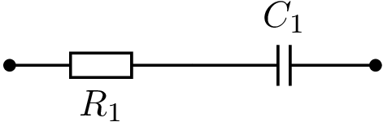

import numpy as np
import matplotlib.pyplot as plt
# Spezifikation der Impedanz/Admittanz
R = 2e3
C = 156e-9
# Frequenzvektor
f = np.logspace(0, 5, 100)
w = 2*np.pi*f
# Bestimmung der Impedaanzen
Z1 = R
Z2 = 1/(1j*w*C)
# Spannungsuebertrangungsfunktion
H_u = Z1 / (Z1 + Z2)
# Bode-Diagramm
plt.subplot(2, 1, 1)
plt.semilogx(f, 20*np.log10(np.abs(H_u)))
plt.ylabel(r'$\vert H_u \vert$/dB')
plt.grid()
plt.title('Bode-Diagramm einer RC-Schaltung')
plt.subplot(2, 1, 2)
plt.semilogx(f, np.angle(H_u))
plt.xlabel(r'Frequenz f/Hz')
plt.ylabel(r'arg($H_u$)/rad')
plt.grid()
plt.show()5 Grafische Analysemethoden / Darstellungen im Frequenzbereich
5.1 Bode-Diagramm
“Unter Bode-Diagramm (engl. Bode plot) versteht man eine Darstellung von zwei Funktionsgraphen: Ein Graph zeigt den Betrag (Amplitudenverstärkung), der andere das Argument (die Phasenverschiebung) einer komplexwertigen Funktion in Abhängigkeit von der Frequenz. Diese Art der Darstellung ist nach Hendrik Wade Bode benannt, welcher diese Diagramme bei seinen Arbeiten in den Bell Laboratories in den 1930er Jahren benutzte.” (Wikipedia 2021)
5.2 Übertragungsfaktor
Ist die Eingangsgröße \(x(t)\) eines linearen Netzwerks eine sinusförmige Wechselgröße der Kreisfrequenz \(\omega\), in komplexer Schreibweise
\[ x(t) = \operatorname{Re}(\underline{\hat{X}} e^{j\omega t}) = \operatorname{Re}(\underline{X}), \]
so gilt dies auch für die Ausgangsgröße
\[ y(t) = \operatorname{Re}(\underline{\hat{Y}} e^{j \omega t}) = \operatorname{Re}(\underline{Y}). \]
Das Verhältnis
\[ \underline{H}(j\omega) = \frac{\underline{Y}}{\underline{X}} \]
der komplexen Zeiger \(\underline{Y}\) und \(\underline{X}\) wird als Übertragungsfaktor des Netzwerks bezeichnet.
Bezeichnet \(\underline{H}(j\omega)\) ein Spannungsverhältnis, so spricht man auch von einem Spannungsübertragungsfaktor; dieser wird durch den Index v bzw. u kenntlich gemacht. Der Betrag von \(\underline{H}_v(j \omega)\) bei der Frequenz \(f = \omega/2 \pi\)
\[ A_v(f) = \vert \underline{H}_v(j2 \pi f) \vert \]
wird als Spannungsverstärkung bezeichnet.
Ein Stromübertragungsfaktor – kenntlich gemacht durch den Index i – bezeichnet entsprechend ein Verhältnis (komplexer) Stromamplituden, während ein Leistungsübertragungsfaktor (Index p) ein Verhältnis zweier (komplexer) Leistungsamplituden bestimmt.
Die Phase \(\varphi\) des Übertragungsfaktors ist frequenzabhängig und errechnet sich aus Real- und Imaginärteil von \(\underline{H}\) gemäß
\[ \varphi(\omega) = \arctan\left( \frac{\operatorname{Im}(\underline{H}(j \omega))}{\operatorname{Re}(\underline{H}(j \omega))} \right). \]
Aus der Phasenverschiebung folgt die Phasenlaufzeit
\[ t_{\varphi(\omega)} = \frac{\varphi(\omega)}{\omega}; \]
diese bestimmt die Verzögerung, die ein unendlich ausgedehntes sinusförmiges Signal der Kreisfrequenz \(\omega\) beim Durchgang durch das lineare System erfährt. Die Einhüllende eines endlichen Wellenzugs wird dagegen um die Gruppenlaufzeit
\[ t_g(\omega) = \frac{d\varphi}{d\omega} \]
verzögert.
5.3 Angaben in dB
Der Wert von Spannungs-, Strom- und Leistungsverstärkungen wird häufig als sog. Verstärkungsmaß \(a\) in (deziBel) dB angegeben. Bei Spannungs- und Stromverstärkungen wird hierzu der (Zehner-)Logarithmus von \(A(f)\) mit 20 dB multipliziert. Dies führt im Fall der Spannungsverstärkung auf
\[ a_v(f) = 20\,dB \cdot \log(A_v(f)) \]
bzw. im Fall der Stromverstärkung \(A_i(f) = \vert H_i(j2 \pi f)\vert\) auf
\[ a_i(f) = 20\,dB \cdot \log(A_i(f)). \]
Da \(\log(1) = 0\) gilt, liegt allgemein für \(a(f) > 0\,dB\) Verstärkung vor, für \(a(f) < 0\,dB\) Abschwächung.
Soll eine Leistungsverstärkung in dB ausgedrückt werden, so ist der Logarithmus der Leistungsverstärkung \(G_p(f) = P_2/P_1\) mit 10 dB zu multiplizieren.
\[ a_p(f) = 10\,dB \cdot \log(G_p(f)). \]
Dabei bezeichnen \(P_1\) und \(P_2\) die Effektivwerte der vom System aufgenommenen bzw. abgegebenen Wirkleistung. Der Hintergrund für den gegenüber \(a_v\) und \(a_i\) halbierten “Vorfaktor” von 10 dB ist, daß die Leistung proportional zum Quadrat von Spannungs- bzw. Stromamplitude ist.
Die “Einheit” dB wird für relative Pegelangaben verwendet, d.h. für die Angabe von Verhältnissen. Daneben werden aber auch absolute Pegelangaben in dB vorgenommen, wobei eine feste Bezugsgröße vorgegeben wird. Erwähnt werden soll hier die gebräuchliche “Einheit” dBm, die für Leistungsangaben verwendet wird und den Effektivwert \(P\) der Leistung bezogen auf 1 mW angibt \(P\) in dBm = \(10\,dB \log(P/1\,mW)\).
5.3.1 Bode-Diagramm einer RC-Schaltung (Hochpass)
Ermitteln Sie den Betrags- und Phasengang der einfachen RC-Schaltung mit Hilfe der komplexen Wechselstromrechnung (KWR). Nutzen Sie Python und SPICE zur Darstellung des Bode-Diagramms.
5.4 Nyquist-Diagramm
“Ein Nyquist-Diagramm, auch als Nyquist-Graph oder Nyquist-Plot bezeichnet, stellt die Ortskurve der Ausgangsgröße eines Regelkreises mit der Frequenz als Parameter dar. Es wird in der Regelungstechnik, Verstärkerkonstruktion und Signalaufbereitung verwendet, um die Stabilität eines Systems mit Rückkopplung zu beschreiben. Benannt ist es nach dem schwedisch-amerikanischen Physiker Harry Nyquist.” (Wikipedia 2023)
“Passive lineare Schaltungen mit R, L und C an sinusförmigen Signalen sind durch ihre Impedanz, dem Wechselstromwiderstand oder seinem Leitwert, der Admittanz charakterisierbar. Die Schaltungen bilden von der Frequenz abhängige Spannungsteiler, deren Spannungsverlauf im Amplitudenfrequenzgang grafisch darstellbar ist. Die Phasenlage des Ausgangssignals bezogen auf das Eingangssignal kann grafisch im Phasenfrequenzgang gezeigt werden. Beide Darstellungen bilden das komplette Bodediagramm.
Bei gegebenen Bauteilwerten kann für jede Frequenz die Impedanz Z berechnet und als Zeiger in ein Polarkoordinatensystem mit reeller und imaginärer Achse gezeichnet werden. Entsprechend den Achsenparametern gibt die Zeigerlänge dann die Impedanz, Admittanz, Ausgangsspannung oder den Ausgangsstrom an. Die Phasenlage ist durch den Winkel des Zeigers mit der reellen Achse bestimmt.
In der Elektronik beschreibt die Systemtheorie unter anderem das Übertragungsverhalten von Signalen. Eine hilfreiche Voraussetzung ist das Rechnen mit komplexen Größen sowie deren Darstellungen im Polarkoordinatensystem oder der [Einführung in die komplexe Gaußschen Zahlenebene. Die oben genannten komplexen Größen sind von den Bauteilwerten abhängig. Die Impedanz Z einer dimensionierten RC- oder RL-Reihenschaltung ist frequenzabhängig. Die Ortskurve ist die Verbindung der errechneten Impedanzwerte in der komplexen Ebene durch einen Kurvenzug mit der Frequenz als Parameter. Die Zeigerlänge vom Nullpunkt zum Kurvenpunkt auf der Ortskurve entspricht dem skalaren Impedanzwert der aktuellen Frequenz. Der Phasenwinkel bezogen auf die Re-Achse zählt linksdrehend positiv und rechtsdrehend negativ. Die Lote vom Zeigerendpunkt auf die Koordinatenachsen ergeben für die jeweilige Frequenz als Achsenabschnitte die Wirk- und Blindkomponente des Systems.”
Entnommen aus Elektrophysik – Spezielle Grundlagen, Ortskurve (Mietke 2024)
Vergleich zum Zeigerdiagramm
Zeigerdiagramm nur für konstante Parameter
Im Zeigerdiagramm keine Aussagen über Auswirkungen von Änderungen der Frequenz oder Schaltelemente
“Für jeden Wert der Zweipole \(R\), \(L\), und \(C\) oder jede Frequenz müssten gesonderte Zeigerdiagramme erstellt werden.”
“Man verzichtet auf die Darstellung der Zeiger und trägt in der komplexen Zahlenebene nur die Kurve auf.”
5.4.1 Ortskurve einer RC-Schaltung
Mit den Bauteilen \(R\) = 2 k\(\Omega\) und \(C\) = 159 nF kann eine Reihen- oder Parallelschaltung gebildet werden. Die komplexe Impedanz der Reihenschaltung ist von der Frequenz abhängig und grafisch in der komplexen Ebene als Ortskurve mit der Frequenz als Parameter dargestellt. Die Blindwiderstandswerte wurden für einen bestimmten Frequenzbereich errechnet und im Polarkoordinatensystem eingetragen. Alle Werte liegen im 4. Quadranten auf einer Geraden. Da der ohmsche Widerstand ist von der Frequenz unabhängig ist, verläuft sie parallel zur imaginären Achse im Abstand von 2 k\(\Omega\). Auf die reelle (Re) Achse bezogen ist der Phasenwinkel der Impedanz negativ. Das Diagramm ist mit den angegebenen gerundeten Rechenwerten des Blindwiderstands, der Impedanz und des Phasenwinkels erstellt.

\[ \underline{Z} = R_1 + \frac{1}{j \omega C_1} \]
import numpy as np
import matplotlib.pyplot as plt
# Spezifikation der Impedanz/Admittanz
R = 2e3
C = 156e-9
f = np.linspace(0.2e3, 5e3, 5)
w = 2*np.pi*f
Z = R + 1/(1j*w*C)
# Ortskurve der Impedanz
plt.plot(Z.real, Z.imag, '-x')
plt.grid()
plt.xlabel(r'Re{Z}')
plt.ylabel(r'Im{Z}')
plt.show()“Die Ortskurve kann auch für die Parallelschaltung von R und C mit der Frequenz als Parameter gezeichnet werden. Im Polardiagramm wird sie durch die Zeiger aller Gesamtleitwerte oder Admittanzen gebildet und verläuft im 1. Quadranten parallel zur imaginären Achse. Die Achsenbezeichnungen der Leitwerte werden in Siemens (S) angeben. Die Phasenwinkel sind auf die reelle (Re) Achse bezogen positiv.” (Mietke 2024)
5.4.2 Inversion von Ortskurven
“Bei der Konstruktion einer Ortskurve ist es oft notwendig von der Widerstandsform \(\underline{Z}(\omega)\) auf die Leitwertsform \(\underline{Y}(\omega)\) überzugehen und umgekehrt. Beide Funktionen gehen jeweils aus der Kehrwertbildung der anderen hervor, man nennt sie zueinander inverse Funktionen und die Kehrwertbildung selbst Inversion.” Kap. 5, (Büttner 2014)
Die Inversion der Ortskurve hat als Ergebnis die zur Ausgangsschaltung äquivalente Schaltung. Diese Umrechnung ist immer dann notwendig, wenn es sich um gemischte Reihen- und Parallelschaltungen wie bei T- und \(\Pi\)-Filtern, belasteten Filtern und Schwingkreisen handelt.
Die Ortskurven einfacher RC- und RL-Schaltungen verhalten sich wie folgt:
Verläuft die Ortskurve der Impedanz oder Admittanz im 1. Quadranten, so befindet sich die dazu invertierte Ortskurve im 4. Quadranten.
Die Ortskurve der Impedanz einer Reihenschaltung ist eine Parallele zur imaginären Achse im Abstand des ohmschen Widerstandswerts. Die invertierte Ortskurve der Admittanz ist ein im Nullpunkt endender Halbkreis mit dem Durchmesser des reellen Leitwerts.
Die Ortskurve der Admittanz einer Parallelschaltung ist eine Parallele zur imaginären Achse im Abstand des reellen Leitwerts. Die invertierte Ortskurve der Impedanz ist ein im Nullpunkt endender Halbkreis mit dem Durchmesser des ohmschen Widerstandswerts.
Inversion eines Punktes (Widerstandsform/Impedanz): \(\underline{Z} (5 + 5j) \Omega\)
Ma{}stäbe \(M_Z = 2 \Omega/cm\) und \(M_Y = 0.1 S/cm\)
Leitwertform/Admittanz: \(\underline{Y} = 1 / \underline{Z}\)
\[ \underline{Y} = \frac{1}{(5 + 5j) \Omega} = \frac{(5 - 5j)S}{50} = (0.1 - 0.1j) S \]
- Inversion von Ortskuven durch Inversion einzelner Punkte:
In die komplexe Zahlenebene wird der Zeiger \(Z\) eingetragen, dessen Spitze invertiert werden soll.
Um den Ursprung des Koordinatensystems wird ein Inversionskreis mit beliebigem Radius \(r\) geschlagen.
Von der Spitze des Zeigers \(Z\) aus werden Tangenten an den Kreis gelegt, sie ergeben die Berührungspunkte \(T_1\) und \(T_2\). Die Tangentenpunkte kann man auch finden, wenn man um die Mitte des Zeigers einen Kreis mit dem Radius \(Z / 2\), d.h. einen Thaleskreis, schlägt (siehe Höhensatz).
Die beiden Punkte \(T_1\) und \(T_2\) werden miteinander verbunden.
Wo die Verbindungslinie den Zeiger \(Z\) schneidet, liegt die Spitze des konjugiert komplexen Zeigers \(Y^*\).
Spiegelt man den Zeiger \(Y^*\) an der reellen Achse, so erhält man \(Y\). Die Spitze dieses Zeigers entspricht also der invertierten Spitze von \(Z\).
Bezeichnet man die Maßstäbe für den komplexen Scheinwiderstand mit \(M_Z\) und den Scheinleitwert mit \(M_Y\) sowie die Länge des Zeigers \(Z\) mit \(L_Z\) und die der Zeiger \(Y\) bzw. \(Y^*\) mit \(L_Y^*\) bzw. \(L_Y\), so ist – da das Dreieck 0T1P rechtwinklig ist – nach dem Kathetensatz
5.5 RC-Filter
5.5.1 RC-Tiefpaß
5.5.2 RC-Hochpaß
5.5.3 RC-Bandpaß
“Besitzt ein Netzwerk sowohl bei hohen als auch bei tiefen Frequenzen einen Sperrbereich und bei mittleren Frequenzen einen Durchlaßbereich, so liegt ein Bandpaß vor. Der prinzipielle Verlauf der Spannungsverstärkung \(a_v\) ist im Bode-Diagramm {numref}fig:lec5bp skizziert. Die Grenzen des Durchlaßbereichs werden nach unten durch die untere Grenzfrequenz \(f_{gu}\) und nach oben durch die obere Grenzfrequenz \(f_{go}\) bestimmt. Die Differenz \(B = f_{go} − f_{gu}\) heißt Bandbreite (engl. bandwidth) des Bandpasses; das geometrische Mittel
\[ f_m = \sqrt{f_{gu} f_{go}} \]
der beiden Grenzfrequenzen wird als Bandmittenfrequenz bezeichnet. Bei logarithmisch unterteilter Frequenzskala liegt \(f_m\) genau in der Mitte zwischen \(f_{gu}\) und \(f_{go}\). Ein Bandpaß heißt schmalbandig, falls \(B << f_m\) gilt; als Maß gilt die relative Bandbreite \(B/f_m\). Die Abschwächung des Signals bei der Bandmittenfrequenz wird als Einfügungsdämpfung bezeichnet.” (Reisch 2007)
“Die als Wien-Glied bezeichnete Schaltung ist ein spezieller RC-Bandpass. Im Wien-Robinson-Generator bestimmt dieses Filter die Ausgangsfrequenz. Er generiert Sinusfrequenzen mit sehr geringem Klirrfaktor. Im durchstimmbaren Sinusgenerator sind die beiden Widerstände durch gemeinsam einstellbare Potentiometer ersetzt. Diese Anordnung gibt es auch in Wechselstrom-Brückenschaltungen.” {cite}mietke2024
5.6 Elementtransformation
Entn. aus (Deliyannis, Sun, und Fidler 1998)
5.7 Messbrücken
5.7.1 Wheatstone-Messbrücke – Gleichstrommessbrücke
Zwei mögliche Messverfahren:
Ausschlagverfahren Brückenspannung \(U_D\) wird mit hochohmigem Messinstrument gemessen.
Abgleich- oder Nullverfahren Brückenspannung \(U_D\) wird zu Null abgeglichen.
5.7.2 Wechselstrommessbrücke
- Abgleichbedingung
\[ \underline{Z}_1 \underline{Z}_4 = \underline{Z}_2 \underline{Z}_3 \]
- Zerlegung in Betrag und Phase
\[\begin{align} \vert\underline{Z}_1\vert \vert\underline{Z}_4\vert &= \vert\underline{Z}_2\vert \vert\underline{Z}_3\vert \\ \varphi_1 + \varphi_4 &= \varphi_2 + \varphi_3 \end{align}\]
- Zerlegung in Real- und Imaginärteil
\[\begin{align} R_1 R_4 - X_1 X_4 &= R_2 R_3 - X_2 X_3 \\ X_1 R_4 + R_1 X_4 &= X_2 R_3 + R_2 X_3 \end{align}\]
- zwei Bedingungen \(\Rightarrow\) zwei abgleichbare Elemente